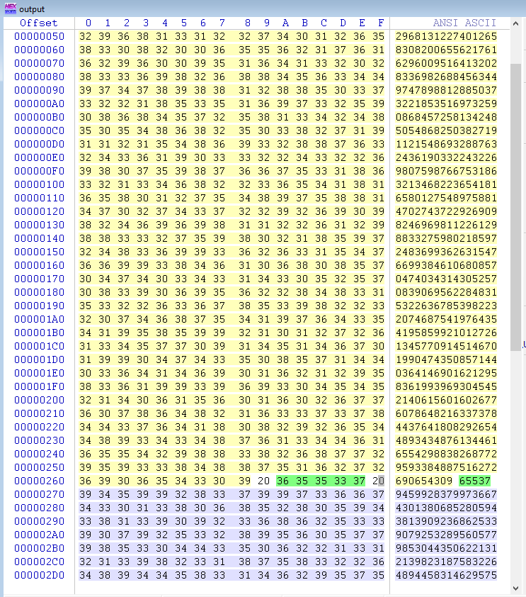
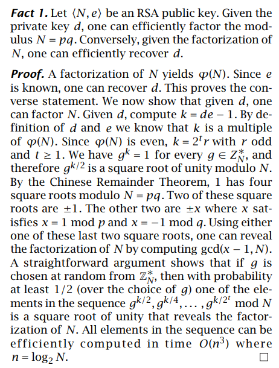
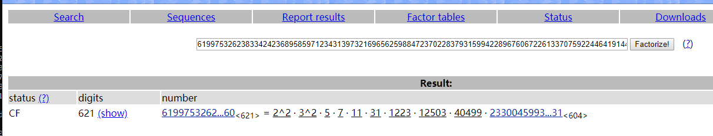

Writeup for RSA in 2019西湖决赛
Writeup for RSA in 2019西湖决赛0x00 Observation0x01 Analysis0x02 Decryption0x03 Another solution0x04 Reference
0x00 Observation

这是一道标准的RSA加密，给出了n, e, d
用Winhex打开output文件提取数据

0x01 Analysis
flag是对p+q的md5加密值，所以需要根据n, e, d将n质因数分解成p和q。
关于如何在给定的e和d的情况下分解n，有一篇 paper 提供了一个通法。

0x02 Decryption
根据paper所给出的方法，写出解密脚本：
x1# python22from md5 import md534def gcd(a, b):5 if a < b:6 a, b = b, a7 while b:8 a, b = b, a % b9 return a1011n = 1635257896337230613164240754156704553376669117713837567649191389759245896554406829681312274012658308200655621761629600951641320283369826884563449747898812885037322185351697325908684572581342485054868250382719112154869328876324361903322432269807598766753186321346822365418165801275489758814702743722926909824696981122612988332759802185972483699362631547669938461068085704740343143052570839069562284831532263678539822320746875419764354195859921012726134577091451467019904743508571440364146901621295836199396930454521406156016026776078648216337378443764180829265448934348761344616554298838268772959338488751627269065430912e = 6553713d = 94599283799736674301380685280594381390923686253390792532895605779853044350622131213982318758322648944583146295754555534857526856437432666546308299574420087752597763115856540148581653417575472841120618851580068814757405535328265762608394303439607385208223679755286443291726688776962087410076483700455205352980401616754077792393004666816154938926922655422902554086735338530116621349538694326325540082353408648033776103524381462645247707103452734397241070801901829182855474261665618037166440894140783894750721033154326381975781861065766267288690203662140774551945549307255760232749227411159412147896000891667544764494531415k = e * d - 116x = pow(2, k / 4, n)17assert x != 11819p = gcd(x - 1, n)20q = n/p2122print "p: %d\nq: %d" % (p, q)23print "Flag: flag{%s}" % md5(str(p + q)).hexdigest()24# p: 13438841666173845543715507207332500689071312176159760614708975873338548111256549330459741484140355333445275159425176145297484075785836021974173512312095768235314694711207157647984183887500874881371725446713742482294605340149263230708588798381609656978240934935239826926986539336199932919458282771564684044299125# q: 12168146161385668589138969765508270798232493439400337574582151479761956958375084172569449058573998244023783967515514610266833462347452475732841486496381473807194639126069579236676252173352750437778850366962811486992115965861829303066373092378134714657673152540517334856849136115590747054186588899584680020029926# Flag: flag{e7ddad281ff7dfc99eb3379e0efd46f8}0x03 Another solution
事实上，只需要求出p+q即可，也就是说不必单独地算出p, q。
一方面，由于φ(n) = (p-1)(q-1) = pq - (p+q) + 1，其中pq=n已知，所以只要算出φ(n)即可求得p+q。
另一方面，根据RSA的定义，有ed = kφ(n) + 1。现在e, d都已经给出，因而可以算出kφ(n) = ed - 1 ；其中k是一个倍数，可以看出k的大小与e差不多，因此只要对kφ(n)质因数分解，遍历k的所有可能，就可以得出φ(n)。
通过factordb.com网站对算出来的kφ(n)质因数分解：

解密：
xxxxxxxxxx881# python32import itertools3import hashlib45n = 163525789633723061316424075415670455337666911771383756764919138975924589655440682968131227401265830820065562176162960095164132028336982688456344974789881288503732218535169732590868457258134248505486825038271911215486932887632436190332243226980759876675318632134682236541816580127548975881470274372292690982469698112261298833275980218597248369936263154766993846106808570474034314305257083906956228483153226367853982232074687541976435419585992101272613457709145146701990474350857144036414690162129583619939693045452140615601602677607864821633737844376418082926544893434876134461655429883826877295933848875162726906543096e = 655377d = 945992837997366743013806852805943813909236862533907925328956057798530443506221312139823187583226489445831462957545555348575268564374326665463082995744200877525977631158565401485816534175754728411206188515800688147574055353282657626083943034396073852082236797552864432917266887769620874100764837004552053529804016167540777923930046668161549389269226554229025540867353385301166213495386943263255400823534086480337761035243814626452477071034527343972410708019018291828554742616656180371664408941407838947507210331543263819757818610657662672886902036621407745519455493072557602327492274111594121478960008916675447644945389def GetMultiple(l):10 ans = 111 for i in l:12 ans*=i13 return ans141516def bitlength(x):17 '''18 Calculates the bitlength of x19 '''20 assert x >= 021 n = 022 while x > 0:23 n = n+124 x = x>>125 return n262728def isqrt(n):29 '''30 Calculates the integer square root31 for arbitrary large nonnegative integers32 '''33 if n < 0:34 raise ValueError('square root not defined for negative numbers')35 36 if n == 0:37 return 038 a, b = divmod(bitlength(n), 2)39 x = 2**(a+b)40 while True:41 y = (x + n//x)//242 if y >= x:43 return x44 x = y454647def is_perfect_square(n):48 '''49 If n is a perfect square it returns sqrt(n),50 51 otherwise returns -152 '''53 h = n & 0xF; #last hexadecimal "digit"54 55 if h > 9:56 return -1 # return immediately in 6 cases out of 16.57 # Take advantage of Boolean short-circuit evaluation58 if ( h != 2 and h != 3 and h != 5 and h != 6 and h != 7 and h != 8 ):59 # take square root if you must60 t = isqrt(n)61 if t*t == n:62 return t63 else:64 return -165 return -166 6768kphi = e*d - 169factor = [3,3,5,7,11,31,1223,12503,40499] # φ(n)中必有因数470kk = []71for i in range(1,len(factor)):72 c = list(itertools.combinations(factor, i))73 for kkk in c:74 m = GetMultiple(kkk)75 if 1000 < m < 1000000: # 根据e，d，n的大小预估k的范围76 kk.append(m) # all possible k7778for k in kk:79 phi = kphi//k80 x = n+1-phi81 y = n82 if(is_perfect_square(x**2-4*y)!=-1): # verification83 print("k: %d" % k)84 print("p+q: %d" % x)85 print("Flag: flag{" + hashlib.md5(str(x).encode()).hexdigest()+"}")86# k: 3791387# p+q: 25606987827559514132854476972840771487303805615560098189291127353100505069631633503029190542714353577469059126940690755564317538133288497707014998808477242042509333837276736884660436060853625319150575813676553969286721306011092533774961890759744371635914087475757161783835675451790679973644871671149364064329088# Flag: flag{e7ddad281ff7dfc99eb3379e0efd46f8}0x04 Reference
[1] https://stackoverflow.com/questions/5747013/how-to-factor-rsa-modulus-given-the-public-and-private-exponent [2] http://www.ams.org/notices/199902/boneh.pdf [3] https://www.di-mgt.com.au/rsa_factorize_n.html